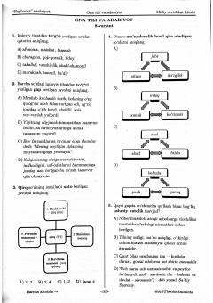

DAOna tili va adabiyot fanidan milliy sertifikat imtihoniga tayyorlanish uchun 8-test varianti.
Ushbu qo'llanma ona tili va adabiyot fanidan milliy sertifikat imtihoniga tayyorlanayotgan o'quvchilar uchun mo'ljallangan test variantlarini o'z ichiga oladi. Kitobda imlo, grammatika, leksika hamda o'zbek mumtoz va zamonaviy adabiyoti bo'yicha saralangan test savollari va ularning tahlillari berilgan. Nashr abituriyentlar va o'qituvchilar uchun amaliy mashg'ulot sifatida foydalidir.